Chemistry 20: Module 7—Chemical Analysis
 Self-Check Answers
Self-Check Answers
SC 2.
- C3H8(g) + 5 O2(g) → 3 CO2(g) + 4 H2O(g)
- Use stoichiometry to predict the theoretical number of moles of O2(g) required to react with 2.50 mol of C3H8(g).
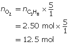
To fully react with 2.50 mol of propane, 12.5 mol of O2(g) is required; but there is only 12.0 mol of O2(g). Therefore, oxygen is the limiting reagent and propane is in excess.
- 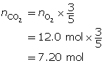 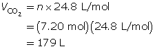
When the reaction is complete, 179 L of CO2(g) will be produced.
SC 3.
- C4H10(g) + 6.5 O2(g) → 4 CO2(g) + 5 H2O(g)
or
2 C4H10(g) + 13 O2(g) → 8 CO2(g) + 10 H2O(g)
- 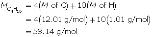 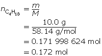
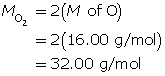 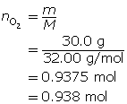
- Use stoichiometry to predict the theoretical number of moles of O2(g) required to react with 0.172 mol of C4H10(g).
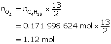
To fully react with the butane, 1.12 mol of O2(g) is required; but there is only 0.938 mol of O2(g). Therefore, oxygen is the limiting reagent and butane is in excess.
- 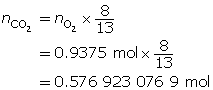 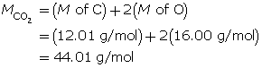
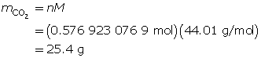
When the reaction is complete, 25.4 g of CO2(g) will be produced.
SC 4.
- CH4(g) + 2 O2(g) → CO2(g) + 2 H2O(g)
- 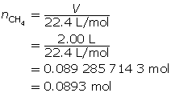 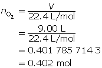
- Use stoichiometry to predict the theoretical number of moles of O2(g) required to react with 0.0893 mol of CH4(g).
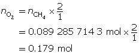
To fully react with the methane, 0.179 mol of O2(g) is required; and there is 0.402 mol of O2(g) available. Therefore, oxygen is in excess and methane is the limiting reagent.
- 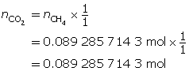 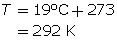
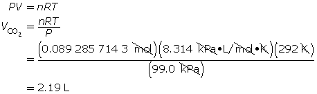
When the reaction is complete, 2.19 L of CO2(g) will be produced.
SC 5. Write the balanced chemical equation and the known substances involved.
AgNO3(aq) |
+ |
NaOH(aq) |
→ |
AgOH(s) |
+ |
NaNO3(aq) |
|
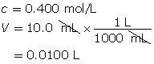 |
|
m = ? |
|
|
Determine the number of moles of each reactant.
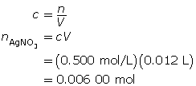 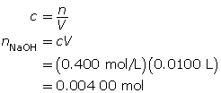
Use stoichiometry to predict the theoretical number of moles of NaOH(aq) required to react with 0.006 00 mol of AgNO3(aq).
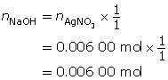
To fully react with the silver nitrate, 0.006 00 mol of NaOH(aq) is required; but only 0.004 00 mol of NaOH(aq) is available. Therefore, the sodium hydroxide is the limiting reagent and the silver nitrate is in excess.
Calculate the mass of AgOH(s) produced when the reaction is complete.
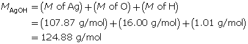
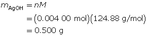